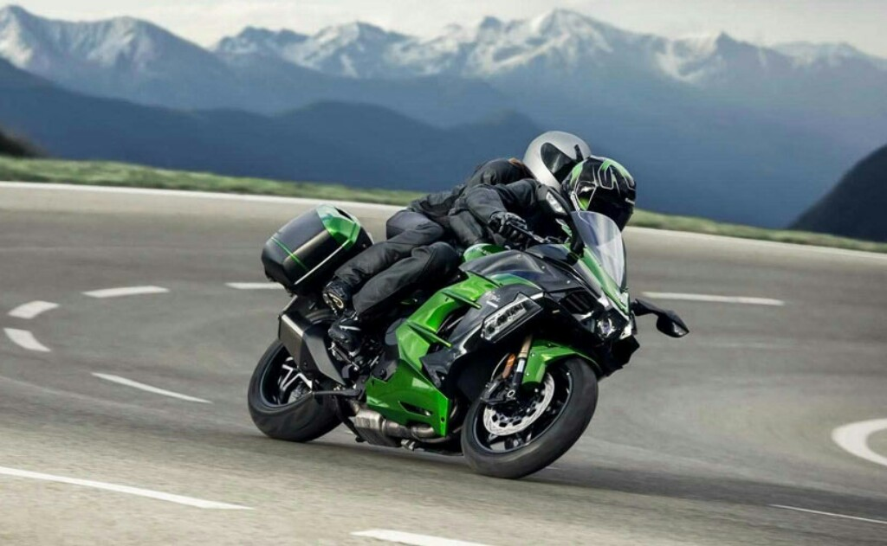

Motosiklet Ve Türleri Hakkında
Motosiklet, iki ya da üç tekerlekli, bisiklet benzeri, içten yanmalı motora sahip bir ya da iki kişilik ulaşım aracıdır. İlk örnekleri bisikletlere motor takma girişimleriyle ortaya çıkmıştır. 1869 yılında ABD Massachusetts’li Sylvester Roper buhar gücüyle çalışan motosiklet benzeri bir taşıtı geliştirmeye çalışmıştır. 1893 yılında Felix Millet beş silindirli bir motoru bir bisikletin ön tekerleğine takarak bugünkü motosiklete oldukça benzeyen bir taşıt gerçekleştirmiştir. Başarılı ilk iki tekerlekli motorlu taşıt tasarımını Fransız mucitler Michael ve Eugene Werner gerçekleştirmiştir. Werner kardeşler aracın motorunu, kadronun altına iki teker arasına yerleştirdiler. O tarihten sonra motosiklet tasarımlarında motor hep aynı yerde kalmıştır.
Motosiklet Türleri;
- Süpersport
- Naked
- Enduro
- Chopper
- Cafe-Racer